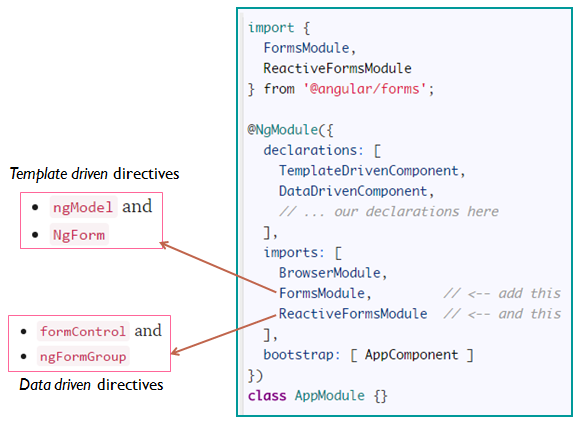
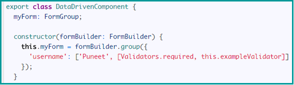
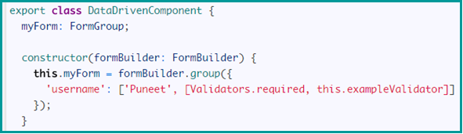
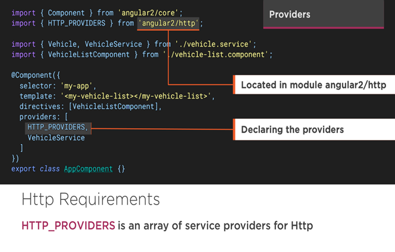
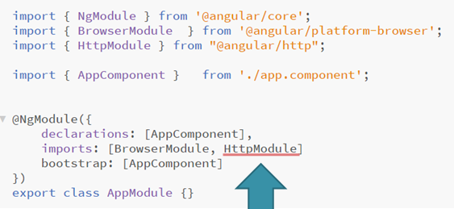
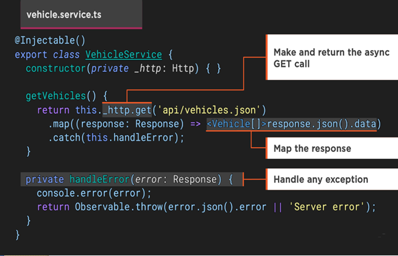
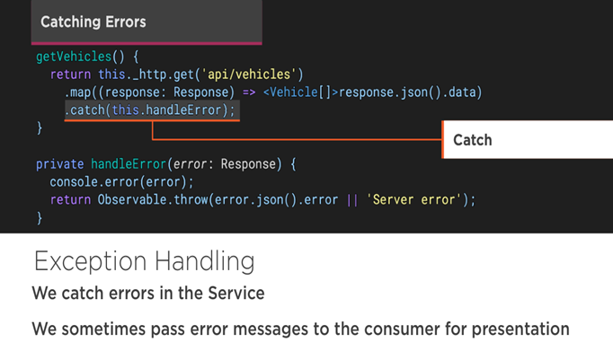

- Form can end up being really complex
- Form inputs are meant to modify data, both on the page and the server
- Changes often need to be reflected elsewhere on the page
- Users have a lot of leeway in what they enter, so you need to validate values
- The UI needs to clearly state expectations and errors, if any
- Dependent fields can have complex logic
- We want to be able to test our forms, without relying on DOM selectors
- Thankfully, Angular2 has tools to help with all of above things.
- FormControls
- encapsulate the inputs in our forms and give us objects to work with them
- Validators
- give us the ability to validate inputs, any way we'd like
- Observers
- let us watch our form for changes and respond accordingly
- Represents a single input field
- Smallest unit of an Angular form
- Encapsulate the field's value, and states such as if it is valid, dirty (changed), or has errors
- Most forms have more than one field
- we need a way to manage multiple FormControls
- If we want to check the validity of our form
- iterate over an array of FormControls and check each FormControl for validity.
- FormGroups solve this issue by providing a wrapper interface around a collection of FormControls
- Here's how you create a FormGroup:


- There are two important pieces of functionality that NgForm gives us:
- A FormGroup named ngForm
- A (ngSubmit) output

- A more flexible and common way to configure forms is to use a FormBuilder
- Forms are made up of FormControls and FormGroups
- The FormBuilder helps us make them
- Think of it as a "factory" object.
 

- ngModels to the input boxes -- read value
- ngSumit and ngForm
- HTML5 input validations
- ng-invalid and ng-valid css classes
- [ngModel] to pick the default values, but one way binding
- [(ngModel)] two way binding
- FormGroup ngModelGroup="userData"
- Radio button
- Form state, valid form
- Create Form Group and Form Controls
- Synchronize the form with data-driven comp and bind the FormControls
- submit the form and log form value on the console
- Add validations to the FormControls
- If email is invalid show error message
- If form is invalid don't let the user submit it
- Group Data - Nested Form Group
- Bind radio type
- Custom Validation
- Form Array
- Add data in FormArray
- Async validation
- Angular2 uses Http to get and save data with Promises or Observables.
- Angular2 isolates the http calls in a shared Service.






- RxJx (Reactive Js) implements the asynchronous observable pattern and is widely used in Angular 2




Allows our application to navigate between different Components
- Route Configuration
- Router Outlets
- Router Links
- Route Parameters
- Child Routers